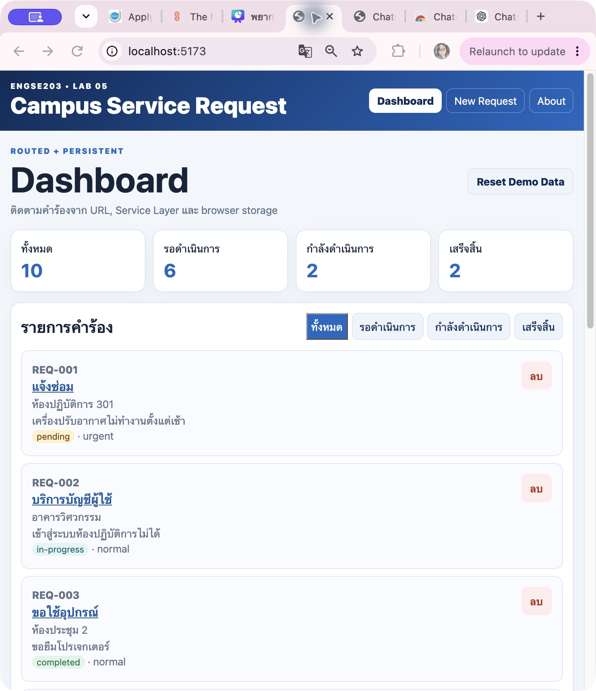
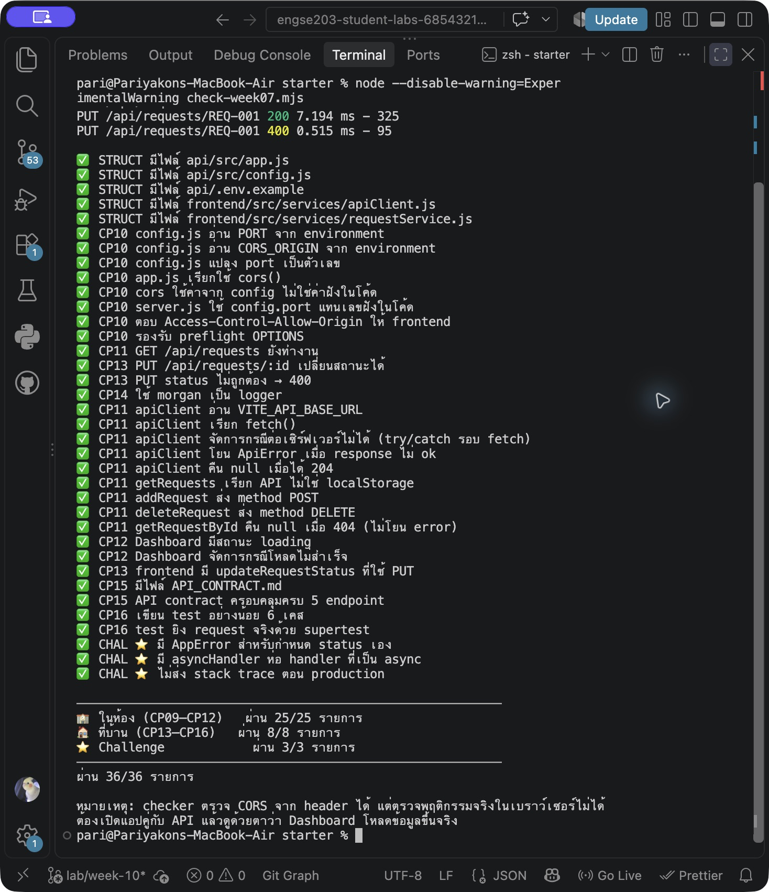

รายละเอียดผลงาน
เชื่อม Express กับ SQLite ใช้ JOIN และ parameterized queries พร้อมหลักฐานการทดสอบ
ผลตรวจ: งานหลัก 28/28Version:
lab-10-submission-v1เดโมนี้ใช้ข้อมูลในเบราว์เซอร์ แยกจาก API และฐานข้อมูลจริง ดูการทำงานฝั่งเซิร์ฟเวอร์และผลทดสอบได้จาก Source Code และหลักฐานด้านล่าง
ภาพหลักฐาน (2)




เอกสารและผลการทดสอบ
AI_USAGE.md
# AI_USAGE.md ## การใช้ AI ในงาน ใช้ ChatGPT ช่วยอธิบายขั้นตอนการทำ LAB Week 10 และช่วยตรวจสอบความเข้าใจเกี่ยวกับการเชื่อม Node.js กับ SQLite ### สิ่งที่ใช้ AI ช่วย - อธิบายการใช้ `node:sqlite` และ `DatabaseSync` - อธิบายการกำหนด path ของ `campus.db` ด้วย `fileURLToPath(import.meta.url)` - ช่วยอธิบายการใช้ `JOIN` ระหว่างตาราง `requests` และ `users` - ช่วยอธิบายการใช้ `AS` เพื่อแปลงชื่อคอลัมน์จากฐานข้อมูลให้ตรงกับรูปแบบที่ frontend ใช้ - ช่วยอธิบายการแปลง `requesterName` เป็น `requester_id` ตอนสร้างคำร้อง - ช่วยอธิบายการทำ `UPDATE` และ `DELETE` ด้วย SQLite - ช่วยตรวจสอบและทดสอบ SQL Injection - ช่วยอธิบายการใช้ parameterized query ด้วย `?` - ช่วยอธิบายการจัดการ error จากฐานข้อมูลด้วย `AppError` - ช่วยตรวจสอบผลจาก `check-week10.mjs` และ `check-week07.mjs` ### ส่วนที่ทำและตรวจสอบด้วยตนเอง เป็นผู้แก้ไขโค้ดในโปรเจกต์ รัน API และ frontend ทดสอบ endpoint ด้วย curl รัน checker และ automated test ด้วยตนเอง รวมถึงตรวจสอบผลลัพธ์ของ Dashboard และจัดเก็บ evidence ก่อนส่งงาน ได้อ่านและทำความเข้าใจโค้ดที่นำมาใช้ โดยเฉพาะส่วนของ `JOIN`, parameterized query, การแปลงชื่อผู้แจ้งเป็น id และการทำงานของ service ที่เชื่อมกับ SQLite
SECURITY_TEST.md
# SECURITY_TEST.md — SQL Injection Test ## การทดสอบ SQL Injection ทดสอบการส่งค่าที่มีคำสั่ง SQL ผ่าน `status` เพื่อดูว่าระบบสามารถป้องกัน SQL Injection ได้หรือไม่ ### 1. ทดสอบเงื่อนไขที่เป็นจริงเสมอ คำสั่งที่ใช้ ```bash curl "http://localhost:3001/api/requests?status=x'%20OR%20'1'='1" ``` ผลที่ได้ ```text [] ``` ระบบไม่คืนข้อมูลออกมาทั้งหมด แสดงว่าค่าที่ส่งเข้าไปถูกมองเป็นข้อความของ `status` และไม่ได้ถูกนำไปต่อเป็นคำสั่ง SQL ### 2. ทดสอบคำสั่ง DROP TABLE คำสั่งที่ใช้ ```bash curl "http://localhost:3001/api/requests?status='%3B%20DROP%20TABLE%20requests%3B%20--" ``` ผลที่ได้ ```text [] ``` จากนั้นลองเรียกข้อมูลตามปกติอีกครั้ง ```bash curl http://localhost:3001/api/requests ``` ยังสามารถดึงข้อมูลคำร้องได้ตามปกติ แสดงว่าตาราง `requests` ไม่ได้ถูกลบ ### 3. ทดสอบการต่อเงื่อนไขเพิ่ม คำสั่งที่ใช้ ```bash curl "http://localhost:3001/api/requests?status=pending'%20OR%20status='completed" ``` ผลที่ได้ ```text [] ``` ระบบไม่ได้คืนรายการที่มีสถานะ `pending` หรือ `completed` ออกมา ## สรุป จากการทดสอบทั้ง 3 แบบ ระบบสามารถป้องกัน SQL Injection ในส่วนของ `status` ได้ เพราะ query ใช้ parameterized query ด้วย `?` แทนการนำค่าจากผู้ใช้ไปต่อกับ SQL โดยตรง
API_CONTRACT.md
# API Contract — Campus Service Request API
**เวอร์ชัน:** 2.0.0 · **Base URL:** `http://localhost:3001`
**รูปแบบข้อมูล:** JSON (`Content-Type: application/json`)
> **API Contract คืออะไร** — ข้อตกลงระหว่างคนทำ front-end กับคนทำ back-end
> ว่าจะคุยกันด้วย endpoint อะไร ส่งอะไรไป ได้อะไรกลับ
> มีไว้เพื่อให้สองฝั่ง**ทำงานคู่ขนานกันได้** โดยไม่ต้องรอกัน
---
## โครงสร้างข้อมูล Request
| field | ชนิด | คำอธิบาย | ตัวอย่าง |
|---|---|---|---|
| `id` | string | รหัสคำร้อง · ขึ้นต้นด้วย `REQ-` · เซิร์ฟเวอร์สร้างให้ | `"REQ-001"` |
| `requesterName` | string | ชื่อผู้แจ้ง · อย่างน้อย 2 ตัวอักษร | `"สมชาย ใจดี"` |
| `requestType` | string | ประเภท · 1 ใน 4 ค่าที่กำหนด | `"แจ้งซ่อม"` |
| `location` | string | สถานที่ · ห้ามว่าง | `"ห้องปฏิบัติการ 301"` |
| `details` | string | รายละเอียด · อย่างน้อย 10 ตัวอักษร | `"เครื่องปรับอากาศไม่ทำงาน"` |
| `priority` | string | `"normal"` หรือ `"urgent"` | `"urgent"` |
| `status` | string | `"pending"` · `"in-progress"` · `"completed"` | `"pending"` |
**ค่าที่ยอมรับของ `requestType`** — `แจ้งซ่อม` · `บริการบัญชีผู้ใช้` · `ขอใช้อุปกรณ์` · `อื่น ๆ`
---
## Endpoints
| Method | Endpoint | คำอธิบาย | Request body | สำเร็จ | ผิดพลาด |
|---|---|---|---|---|---|
| `GET` | `/api/requests` | ดูคำร้องทั้งหมด | — | `200` + array | — |
| `GET` | `/api/requests?status=` | กรองตามสถานะ | — | `200` + array | — |
| `GET` | `/api/requests/:id` | ดูคำร้องใบเดียว | — | `200` + object | `404` ไม่พบ |
| `POST` | `/api/requests` | สร้างคำร้องใหม่ | Request (ไม่ต้องมี `id`, `status`) | `201` + object ที่สร้าง | `400` ข้อมูลไม่ถูกต้อง |
| `PUT` | `/api/requests/:id` | เปลี่ยนสถานะ | `{ "status": "..." }` | `200` + object ที่แก้แล้ว | `400` สถานะผิด · `404` ไม่พบ |
| `DELETE` | `/api/requests/:id` | ลบคำร้อง | — | `204` ไม่มี body | `404` ไม่พบ |
---
## ตัวอย่างการเรียกใช้
### GET /api/requests
```http
GET /api/requests HTTP/1.1
Host: localhost:3001
```
```json
[
{
"id": "REQ-001",
"requesterName": "สมชาย ใจดี",
"requestType": "แจ้งซ่อม",
"location": "ห้องปฏิบัติการ 301",
"details": "เครื่องปรับอากาศไม่ทำงานตั้งแต่เช้า",
"priority": "urgent",
"status": "pending"
}
]
```
### POST /api/requests
```http
POST /api/requests HTTP/1.1
Content-Type: application/json
{
"requesterName": "สุภาวดี รักเรียน",
"requestType": "ขอใช้อุปกรณ์",
"location": "ห้องประชุม 2",
"details": "ขอยืมโปรเจกเตอร์สำหรับนำเสนอ",
"priority": "normal"
}
```
**201 Created**
```json
{
"id": "REQ-MTYOA3MX-YEX9",
"requesterName": "สุภาวดี รักเรียน",
"requestType": "ขอใช้อุปกรณ์",
"location": "ห้องประชุม 2",
"details": "ขอยืมโปรเจกเตอร์สำหรับนำเสนอ",
"priority": "normal",
"status": "pending"
}
```
**400 Bad Request** — เมื่อข้อมูลไม่ถูกต้อง
```json
{
"error": "ข้อมูลคำร้องไม่ถูกต้อง",
"details": [
"ชื่อผู้แจ้งต้องมีอย่างน้อย 2 ตัวอักษร",
"รายละเอียดต้องมีอย่างน้อย 10 ตัวอักษร"
]
}
```
### PUT /api/requests/:id
```http
PUT /api/requests/REQ-001 HTTP/1.1
Content-Type: application/json
{ "status": "in-progress" }
```
**200 OK** — คืนคำร้องที่อัปเดตแล้ว
### DELETE /api/requests/:id
**204 No Content** — ไม่มี body ส่งกลับ
---
## รูปแบบ Error
ทุก error ตอบเป็น JSON ที่มี field `error` เสมอ
```json
{ "error": "ข้อความที่ผู้ใช้ทั่วไปอ่านเข้าใจ" }
```
กรณี validation จะมี `details` เพิ่มมาเป็น array บอกว่าผิดตรงไหนบ้าง
| Status | เมื่อไหร่ | ฝั่งไหนผิด |
|---|---|---|
| `400` | ข้อมูลที่ส่งมาไม่ถูกต้อง | ผู้ใช้ |
| `404` | ไม่พบทรัพยากรที่ขอ | ผู้ใช้ |
| `500` | โค้ดเซิร์ฟเวอร์ผิดพลาด | เซิร์ฟเวอร์ |
> **ตอน production จะไม่ส่ง stack trace กลับไป** — เปิดเผยโครงสร้างภายในให้คนภายนอกเห็นไม่ได้
---
## CORS
API อนุญาตให้เรียกจาก origin ที่กำหนดใน `CORS_ORIGIN` เท่านั้น
```
Access-Control-Allow-Origin: http://localhost:5173
```
**ถ้าเรียกจาก origin อื่น** เบราว์เซอร์จะบล็อกก่อนที่โค้ดจะได้เห็น response — จะเห็น error ใน Console ว่าถูกบล็อกโดย CORS policy
> ⚠ CORS เป็นกลไกของ **เบราว์เซอร์** เท่านั้น · Postman และ curl ไม่ถูกบล็อก เพราะไม่ใช่เบราว์เซอร์
---
## Environment Variables
### ฝั่ง API (`api/.env`)
| ตัวแปร | ค่าเริ่มต้น | คำอธิบาย |
|---|---|---|
| `PORT` | `3001` | พอร์ตที่ API รับคำขอ |
| `CORS_ORIGIN` | `http://localhost:5173` | origin ที่อนุญาตให้เรียก |
| `NODE_ENV` | `development` | `production` จะเปลี่ยนรูปแบบ log และซ่อน stack trace |
### ฝั่ง Frontend (`frontend/.env.local`)
| ตัวแปร | ค่าเริ่มต้น | คำอธิบาย |
|---|---|---|
| `VITE_API_BASE_URL` | `http://localhost:3001` | ที่อยู่ของ API |
> **ต้องขึ้นต้นด้วย `VITE_`** ไม่งั้น Vite จะไม่ส่งค่าไปให้โค้ดฝั่งเบราว์เซอร์
> และ**ห้าม commit ไฟล์ `.env`** — ใช้ `.env.example` เป็นตัวอย่างแทน
---
## การรันทั้งระบบ
ต้องเปิด **2 terminal** พร้อมกัน
```bash
# Terminal 1 — API
cd api && npm run dev # http://localhost:3001
# Terminal 2 — Frontend
cd frontend && npm run dev # http://localhost:5173
```
**ลำดับสำคัญ** — เปิด API ก่อนเสมอ ไม่งั้น frontend จะขึ้นข้อความว่าติดต่อเซิร์ฟเวอร์ไม่ได้
---
## Data Model / ฐานข้อมูล
ใน Week 10 ระบบเปลี่ยนจากการเก็บข้อมูลในไฟล์ JSON มาใช้ฐานข้อมูล SQLite โดยมีตารางหลัก 2 ตาราง คือ `users` และ `requests`
### ตาราง users
| คอลัมน์ | รายละเอียด |
|---|---|
| `id` | รหัสผู้ใช้ เป็น Primary Key |
| `name` | ชื่อผู้ใช้ |
| `department` | สาขาหรือหน่วยงาน |
| `email` | อีเมล และห้ามซ้ำกัน |
### ตาราง requests
| คอลัมน์ | รายละเอียด |
|---|---|
| `id` | รหัสคำร้อง เช่น REQ-001 |
| `requester_id` | รหัสผู้แจ้ง เชื่อมกับ `users.id` |
| `request_type` | ประเภทของคำร้อง |
| `location` | สถานที่ |
| `details` | รายละเอียด |
| `priority` | ระดับความสำคัญ |
| `status` | สถานะของคำร้อง |
| `created_at` | วันที่และเวลาที่สร้าง |
ความสัมพันธ์ของตารางคือ user 1 คนสามารถมีคำร้องได้หลายรายการ โดย `requests.requester_id` เป็น Foreign Key ที่อ้างถึง `users.id`
## รูปแบบข้อมูลในฐานข้อมูลกับ API
ข้อมูลที่เก็บในฐานข้อมูลกับข้อมูลที่ส่งให้ frontend มีรูปแบบไม่เหมือนกันทั้งหมด
ในฐานข้อมูลจะเก็บ `requester_id` เพราะไม่ต้องการเก็บชื่อผู้แจ้งซ้ำในทุกคำร้อง แต่ API จะส่ง `requesterName` ให้ frontend เพื่อให้ใช้งานได้เหมือนเดิม
ใน `requestService.js` จึงใช้ `JOIN` เชื่อมตาราง `requests` กับ `users` และใช้ `AS` เปลี่ยนชื่อคอลัมน์ เช่น `request_type` เป็น `requestType`
## พฤติกรรมของ POST
เวลาสร้างคำร้องใหม่ frontend จะส่ง `requesterName` มา แต่ฐานข้อมูลต้องเก็บเป็น `requester_id`
service จะค้นหาชื่อผู้ใช้ก่อน ถ้ามีผู้ใช้นี้อยู่แล้วก็ใช้ id เดิม แต่ถ้ายังไม่มี จะสร้าง user ใหม่แล้วนำ id ที่ได้มาเก็บในคำร้อง
ทำให้ frontend ไม่ต้องเปลี่ยนรูปแบบข้อมูลจาก Week 07 และฐานข้อมูลก็ยังเก็บข้อมูลแบบไม่ซ้ำกัน